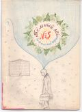

Тёмный лес
N5

ИЗ ИСТОРИИ НИКОЛИНОЙ ГОРЫ
В течении нескольких лет до 1953 года на Николиной горе жил Сергей Сергеевич Прокофьев. В силу некоторых обстоятельств он не был лафанцем, но, если бы ему суждено было родиться лет на 65 позже, он обязательно бы стал полноправным гражданином Лафании /королём, сенатором/, именно Лафании, а не Стефании, так как с юных лет Сергей Сергеевич любил бродить по лесам и, наверное, даже по болотам, как лафанцы. И ещё есть одно огромное сходство. В воспоминаниях о Прокофьеве Ростропович пишет:
"Некоторые места в окрестностях Николиной горы имели у Сергея Сергеевича свои названия, образовавшиеся во время прогулок с Н.Я. Мясковским, как, например, "Тобиково болото" /болото, по которому когда-то бегала собака Тобик/, "Окна" /особый участок на опушке леса/."
Насколько можно верить Ростроповичу насчёт "Окон" - не знаю, но Леснозёрск надо переименовать в Тобики - это ясно.
А вот ещё один отрывок и даже с нравоучительным смыслом для лафанца:
"Однажды, гуляя по лесу, Сергей Сергеевич привёл меня на маленькую полянку, на которой состоялся пикник, когда он первый раз приехал на Николину гору. На этом пикнике был и Мясковский.
"Когда мы собирались уходить, - рассказывал Сергей Сергеевич, - я увидел, что нет Николая Яковлевича. Я начал его искать - оказалось, что он собирает обрывки бумаги на лужайке, которые остались после пикника. Собрав аккуратно все бумажки, Николай Яковлевич закопал их, сказав: "Чтоб не портили ландшафта". Сам Сергей Сергеевич никогда не позволял себе бросать какую-нибудь бумажку на зелень."
По всей вероятности, здесь говорится о Райской поляне - поляне, на которой в 1969 году состоялся Праздник Победы над Стефанией, а через два дня - победа /?/ Стефании. Поляны Икар Прокофьев, скорее всего, не знал. Она была открыта лафанскими лесопроходцами в 1968 или в 1969 году.
На сём и заканчиваем маленький экскурс в прошлое.
Лафанский историк █
ЛИРИКА
***
Вращаются, вращаются, вращаются шары
И внутренней энергией все до краёв полны.
Но что нам с той энергии? Куда её девать?
Не можем развернуться мы и силу показать.
Когда б сосед шершавым был, на тренье всё б ушло,
Но гладко всё, и скучно всё, и всё вокруг старо.
Вращаются, вращаются, вращаются шары...
Куда ж девать энергию, которой все полны?
█
ГАМБИТ
Как пешку, юность в жертву жизни!
И, руководствуясь наитьем,
Иди, когда мечтой нанизан
Король врага, как цель гамбита.
Круши ускоренным развитьем,
На жизнь веди мечты в атаку...
Но, если вдруг она отбита,
То юности, конечно, жалко.
█
ИЕРАРХИЯ
- Вот тебе и вот тебе!
Это А дубасит Б,
Под которой на траве
Распласталась буква В,
Успевая драться с Г.
Г подумала: "Эге,
А - Б, Б - В и т.д.
Ну а я расправлюсь с Д".
Д, махая пресс-папье,
Отнимает рубль у Е,
Та твердит: "Моё! Моё!
Я взяла у буквы Ё."
Ё на первом этаже
Избивает букву Ж;
Ж жужжит, мол, ой-ёй-ёй!
И по З, по З ногой.
З прикрикнула на И:
- Ну-ка, длинная, вали!
/ Мол от этакой свиньи
Достаётся краткой И/.
Краткая, но не кротка,
Эта И колотит К.
К как кактус пустит в цель,
Прямо в цель - в затылок Л.
Л, не зная, кто и чем,
Начинает драться с М,
Ну а М, как джентельмен,
Валит всю вину на Н.
Н кричит: "Послушай, но
Здесь стояла буква О,
Букву П избив за Р
Ту, что в С плюёт теперь."
С твердит: "Кидали те."
Т колотит У, С - Т.
У вопит: "У! Это блеф!
Это Ф, конечно, Ф."
Ф хохочет: "Ха-ха-ха,
В Л - какая чепуха,
Но чего таить греха,
Я кидаюсь мелом в X."
Получив синяк под глаз,
Х всю злость излила враз
Так, что Ц слетела вниз,
Ч расквасив об карниз.
Ч сказала: "Братцы, ша!"
Хватит драться! Бейте Ш."
Ш сказала: "Братцы, ща..."
И пропала вслед за Щ,
А избитый Ъ
Встал и молвил: "Ы - дур-р-рак,
Впрочем все вы тут скоты:
Мягкий знак не мягче Ы."
Э сказала вслух: "Побью
Я скотину эту Ю."
"Успокойтесь, будет вам...
Передрались... свинство, срам!"
- Устыдила буква Я.
Ю надулась: "Я - свинья?!"
Ю и прочие бьют Я.
Эта Я, ох, это Я.
Алфавит, как всякий класс,
Класс,составленный из нас.
Ведь не все богатыри,
Если в сумме 33,
И кому-то, как на грех,
Достаётся больше всех.
█
ГОЛУБАЯ ПЛАНЕТА
Раз сидели в космическом баре
Космонавты созвездия Рака,
В корабле, в их любимом "Икаре",
Было найдено множество брака.
Горе пивом они запивали,
И, чтоб ждать было менее скучно,
Старики молодым разъясняли
Всё, что видели, с точки научной.
Начинал старикашка бывалый,
Он летал на различных ракетах,
Про вулканы друзьям рассказал он,
Их видал он на многих планетах:
"Вот представьте, стоит себе город;
Рестораны, два-три космодрома...
Изверженье - секунд через сорок
Не осталось ни зверя, ни дома."
Выступало ещё всяких много,
И такое порой говорилось,
Что земляне понять и не могут.
Лишь одно в память так и вонзилось.
"Я видал голубую планету,
Атмосфера отравлена газом, -
Говорил зампомпреда ракеты,
- существа претендуют на разум."
"Вся планета разбита на секты,
В каждой есть президент или раджа.
Мало есть смельчаков на планете,
Что не выполнят всё, что он скажет.
Чтобы власть их была безопасней,
Специальных людей нанимают.
Недовольные раджой и властью
В специальных домах пребывают.
Чтобы раджу любили в народе,
Он пред ним иногда выступает,
Всех существ, что бывают в природе,
В рабство в секту согнать обещает.
Если золото сыщется в секте
/Этот хлам они ценят безмерно/,
Отобрать его жаждут соседи.
Лишь кулак говорит у них верно.
Если вы пообедать хотите,
Вас никто не накормит за даром;
Скажут: "Вы нам сперва заплатите
Звонким кругленьким или товаром".
Но не всё на планете так просто.
Там особые люди бывают:
Если кто не даёт то, что просят,
Убивают и всё отнимают.
На планете есть жидкость такая -
Тот, кто выпьет, на день подурнеет.
И, представьте, такие бывают -
Чтобы пить - ничего не жалеют.
Не хотел бы я жить на планете,
Где раджа-самодур управляет,
Где вся сила в железном кастете,
Где всю жизнь лишь добро наживают."
Так болтали в космическом баре
Космонавты созвездия Рака,
На "Икаре" сто тысяч аварий
Потерпев в этот год из-за брака.
█
ЭПИГРАММЫ
ЛАФАНЦЫ
Он сразу Винтик, Шпунтик, Клёпка;
Он знает, сколько стоит стопка;
Он захотел и стал поэтом
И, чтоб утешить белый свет,
Решил помочь ему советом...
Однако где же тот "Совет"?
Да сохранит судьбы удар
Наивный мир его мечтаний,
Как сохранил лесной пожар
Остатки стольких начинаний;
А мам и бабушек метла
Да не сметёт его музея,
Как не смели его дела
Два столь различные Андрея.
Боец-лафанец, футболист,
Спортсмен, пловец и шахматист!
Ты нас прости, в лафанском крае
Оплошность вышла небольшая:
Кто не любил сидеть в сарае,
Любил играть, другим мешая.
Стихи - то вздор, то дрянь... Что се?
Не Все писать стал всё , как Все!
Игра мальчишечья, не спорю...
Однако, мчась и прыгая,
Играешь ты и хуже Бори,
Но в сто раз лучше Игоря.
Мы слышим в доме грозный рык,
И лай, и вой, и скрип, и крик,
А видим только нос да чёлку:
Её мы знаем через щёлку.
Твердит упрямо и давно,
Что ЖИЗНЬ И ШАХМАТЫ - ОДНО,
И признаётся в этом сам
В одной из автоэпиграмм.
ПОЧТИ ЛАФАНЦЦЫ
Рос не по дням, а по часам он.
Такого свет не знал вояки:
Ещё не мог сказать он: "Мама",
Но говорил: "Стефанцы - бяки".
Он шёл бы поступью гигантской
По топям, чащам и крапиве,
Носил бы крест с войны лафанской,
Кружил бы в творческом приливе
Среди созвездий на Пегасе...
Когда б ни этот дядя Вася.
Болтун к врагу перебежал,
Желая мстить нам неуклонно...
Врагам шпиона подослал
И нас избавил от шпиона.
- И он лафанец?
- Как когда:
Как битва - нет,
Как праздник - да.
█
ПО РОДНОЙ СТРАНЕ
1 сентября 1970 года в Лафании был объявлен день траура.
15 октября 1970 года группа лафанцев объявила школу N52 лафанской колонией, директора назначили наместником. Сопротивления не оказано. Все учителя согласились остаться на предложенных им должностях, в чём каждый желающий легко может убедиться сам.
В сентябре, октябре и ноябре 1970 года лафанцы подвергались ежесуточным нападениям со стороны месье Иванова, которого они считают замаскированным под хулигана стефанским шпионом.
4 ноября 1970 года в Лафании состоялся шахматный матч, в котором приняли участие три лафанских гроссмейстера и один мастер. Одна партия не доиграна.
6 ноября 1970 года в Лафании ничего не состоялось.
ИЗВЕЩЕНИЕ
Центральное Лафанское Разведывательное бюро от имени Лафанского сената и всего лафанского народа с глубоким прискорбием извещает, что здоровье президента Стефании остаётся отличным.
Лафанский журнал "Тёмный лес" N5 25 ноября 1970 года
Главный редактор █
Последнее изменение страницы 20 Mar 2019
ПОДЕЛИТЬСЯ: